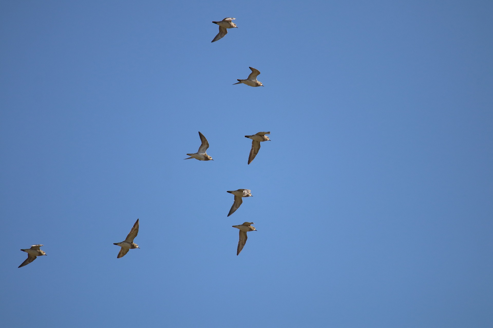

Vögel und Naturschutz
Sogenannte Birdwatcher sind Menschen, die zwar keine akademische Ausbildung zum*zur Ornitolog*in absolviert haben, sich jedoch in hohem Maße für das Leben und Vorkommen von Vögeln interessieren. Oft sind es Forschungsfragen, die die Lai*innen antreiben. Welche Vogelarten kommen in meinem Wohngebiet vor? Zu welcher Jahreszeit ist welcher Vogel vor Ort? Wie geht es den Vögeln? Wie ist es um die aktuelle Population bestellt? Wie migrieren die Vögel in Herbst und Frühling? Brisanter werden diese Fragen jedoch vor dem Hintergrund des Klimawandels und der rasant zunehmenden Zerstörung natürlicher Habitate, Rückzugs- und Brutgebiete von Vögeln. In den Vordergrund treten zunehmend Fragen zum Gesundheitszustand der Vögel, sowie nach dem Grund für häufiger auftretendes Vogelsterben. Welche Vogelarten sind wegen Mangel an Nahrung vom Aussterben bedroht und welche Vogelarten sehen dies als Grund sich in andere Gebiete zurückzuziehen und ihren eigentlichen Lebensraum aufzugeben? In wie weit sorgt die Erderwärmung aufgrund des Klimawandels dafür das bestimmte Vogelarten im Winter nicht mehr ihre Reise vom Norden in den Süden antreten und was für Konsequenzen hat dieses neue Verhalten auf andere Tierarten?
Ebenso wichtig ist die Frage welche Zusammenhänge und Systematiken sich aus diesen Forschungen ergeben. Wie zum Beispiel lässt sich aus den Folgen des Insektensterbens ein Aussterben von einigen Vogelarten ableiten? Was für Konsequenzen hat das Vogelsterben für das restliche Ökosystem?
Menschen auf der ganzen Welt sind interessiert an diesen Fragen und möchten Umweltverbände dabei unterstützen Daten zu sammeln und durch wissenschaftliche Analysen, mögliche Antworten auf die oben genannten Fragen zu erhalten, um damit den Erhalt und den Schutz dieser Tiere zu gewährleisten.
Vögel sind oft Indikatoren dafür wie es um das gesamte Ökosystem bestellt ist. Vögel tragen zur Verbreitung von Pflanzen und Bäumen bei. Sie bestäuben Blumen und tragen Saatgut von einem Ort zum Anderen.
Die Eier von Vögeln und auch ihre Brut sind Nahrung zahlreicher Beutetiere. Der Schwund von Vogelpopulationen wirkt damit direkt auf das Wohlbefinden anderer größerer Tierarten ein.
Wie es den Vögeln um uns herum geht ist letztendlich immer auch ein Warnsystem dafür, wie es unserer Umwelt geht. Nicht zuletzt hat ein Verschwinden der Vögel Einfluss auf den Menschen. Ohne Vögel gäbe es mehr sog. Schädlinge, Insekten die auf den Agrarfeldern die Saat und die Ernte vernichten. Vögel tragen dazu bei, dass neue Wald-und Wiesenflächen entstehen indem sie Saatgut und Kerne fressen und diese woanders wieder ausscheiden. Damit tragen sie zur Biodiversität bei und sind ein gutes Gegenbeispiel zu den von Menschen gemachten Monokulturen, Hybrid- und Forstwäldern.
Der Stellenwert um das Forschungsfeld „Deep-Learning“ wird in der Tierfeldforschung immer wichtiger. Es gibt mittlerweile zahlreiche Projekte, die das Erfassen und Auswerten von Daten im großen Spektrum möglich machen wollen. Die Mittel sind jedoch oft technisch komplex und sind mit hohen finanziellen Aufwänden verbunden. Dies stellt für viele Menschen die sich in ihrer Freizeit für den Vogelschutz einsetzen wollen vor einige Hürden.
Der Tschilp als Gerät zur akustischen Langzeitbeobachtung vereinfacht und automatisiert die oft zeitlich intensiven manuellen Prozesse der Vogelbestimmung. Ich möchte mit dem Tschilp Vogelliebhaber*innen ein leicht selbst herzustellendes Gerät zur Hand geben, dass eine Schnittstelle zwischen Menschen und ihrer Umwelt ist. Die Verwendung des Tschilp soll Spaß machen. Der*Die Nuzter*innen sollen sich motiviert fühlen mehr über die sie umgebende Umwelt und die sich darin befindlichen Vogelarten zu erfahren. Ein nützlicher Nebeneffekt des Tschilp kann zukünftig beispielsweise darin bestehen, große valide Datenmengen über Vogelpopulationen und ihren Zustand zu akquirieren und diese Daten Forschungsinstituten und Naturschutzverbänden zur Verfügung zu stellen.